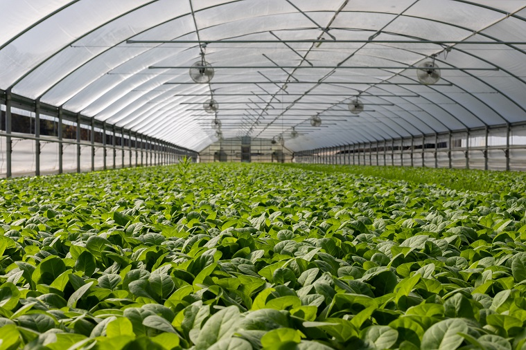

Let's Be Buds
And Grow Together
An important resource for anyone starting to garden is the USDA Plant Hardiness Zone Map. The Hardiness zones are a set of zone numbers based on lowest temperatures of the area which can guide you in deciding what plants will work well in your area. We recommend that anyone who is starting to plan a garden checks what zone they are in and double check that the plants they choose work well in their zone.

For example, Tomatoes love hotter weather, meaning you can plant earlier in zones 5-7, but you may need to wait until fall if you're in zones 10 and above. Every plant has different preferred conditions, which makes it essential to find out what to plant and when depending on your zone. By researching and planning this way, you can ensure that your plants are happy and healthy all season long.
Greenhouses are a great resource to lengthen your season and create a micro-climate with a different zone from the rest of your yard. If you live in a zone 2 area, your season may be very short making it difficult to get a good yield of produce. However, by planting in a greenhouse you can use the heat of the sun to raise the temperatures and extend the length of your season by a month or more!
